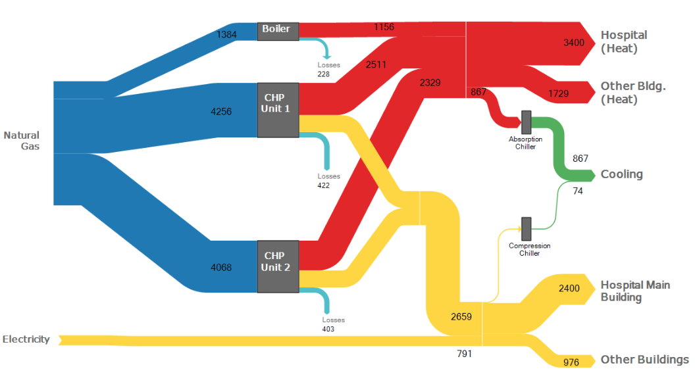
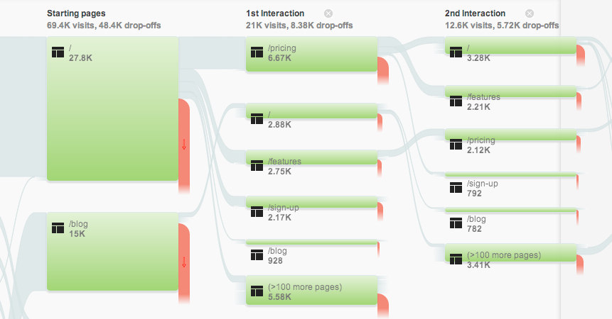

Sankey Diagrams
June 27, 2018
San Francisco, CA
Sankey diagrams are a data visualization method that show the flow across systems. The main differentiator is that the flow paths are proportionally set, ie. thicker lines is more flow in that direction, thinner lines is less flow.
Sankey Diagram - from www.ifu.com/en/e-sankey/
This is a very useful visualization tool for showing the fall off for a system. For example, the total energy spent on a combustion engine or foot traffic in a mall.
One of the best examples using this in UX design is in Google Analytics behavior flow. The behavior flow shows where users start and go next as they navigate through the website. It can be easy to see how many users drop off or click into the next step. You can also get a sense of how they navigate and connect between the individual pages.
Google Analytics Behavior Flow Diagram - from coschedule.com/blog/google-analytics/
Also see Alluvial diagram (in which we can see how different flows reconnect). The Alluvial diagram is a variation of a sankey diagram where the result is the sum of all the parts reconnected again. This is useful when there are no fall off between the first step and the last step.
Sources:
Wikipedia Sankey Diagram
Wikipedia Alluvial Diagram